Fun Projects for your LEGO® MINDSTORMS® NXT!
|
|
Fun Projects for your LEGO® MINDSTORMS® NXT! |
| Claw Striker |
|

1-16
| Start by building the 3-Motor Chassis. Click the picture for building instructions. |

|
|
17

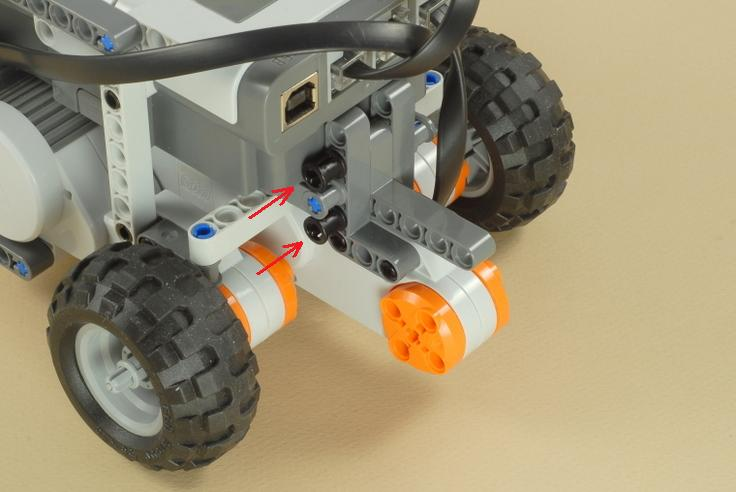
18
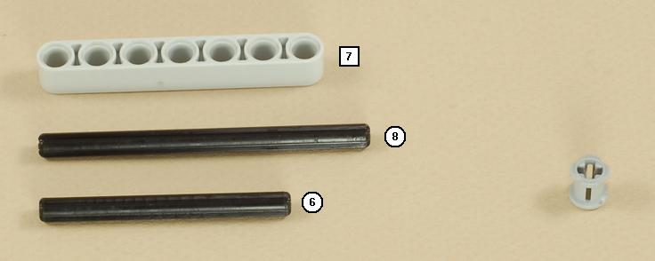
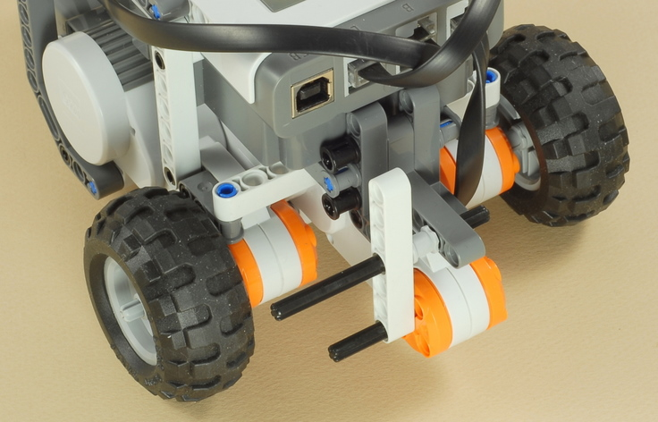
19
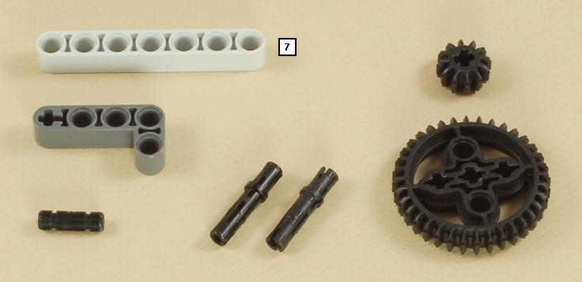
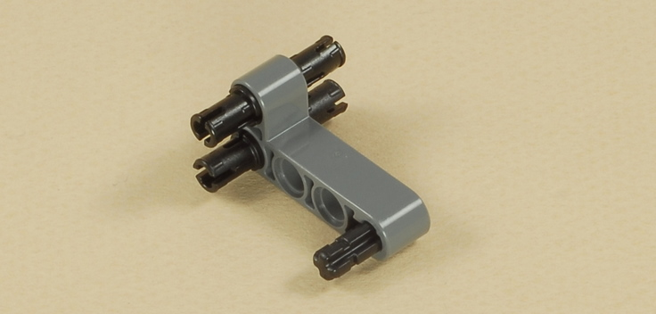
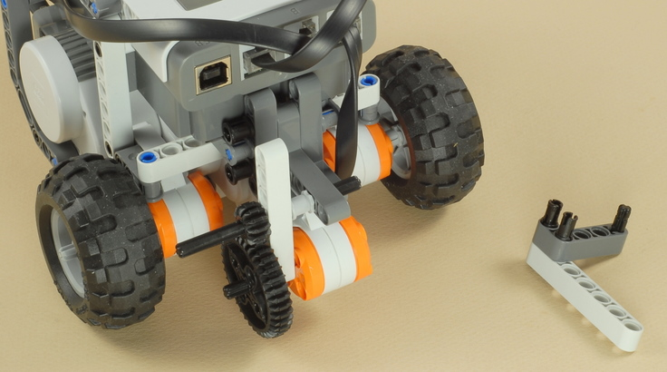
| Important: You will need to rotate the black bushed long peg (inserted in step 17) so that the axle hole is upright before the part shown below will insert into it. |

20
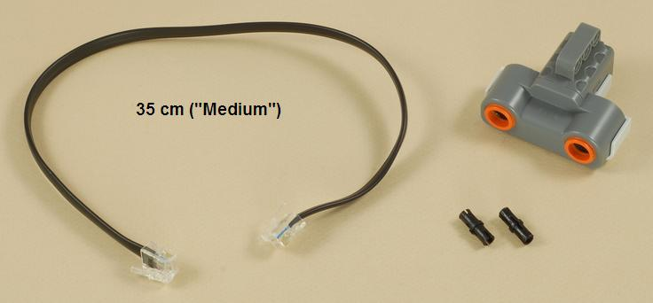
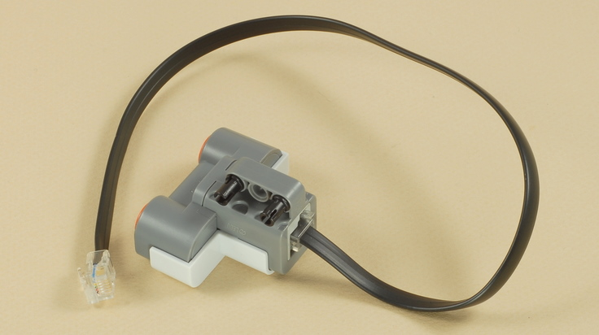
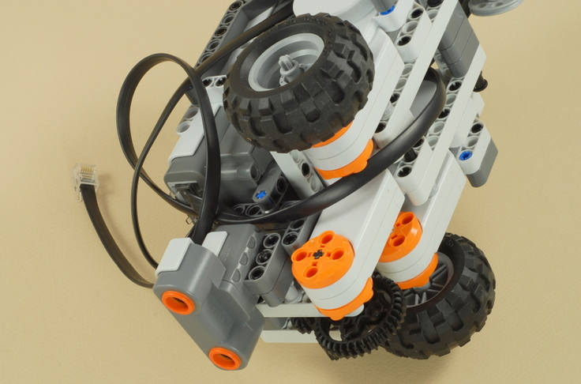
| Plug the wire for the ultrasonic sensor into port 4 on the NXT, routing it through the chassis brace as shown to keep it out of the way. |

21
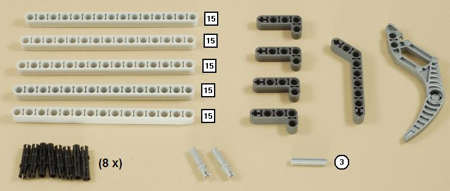
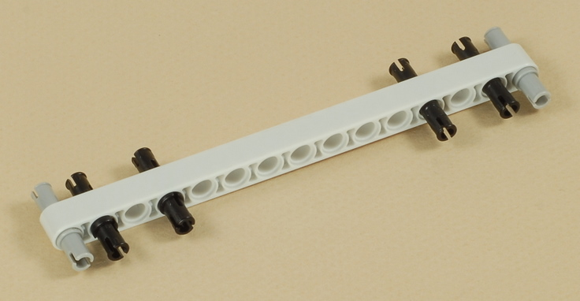
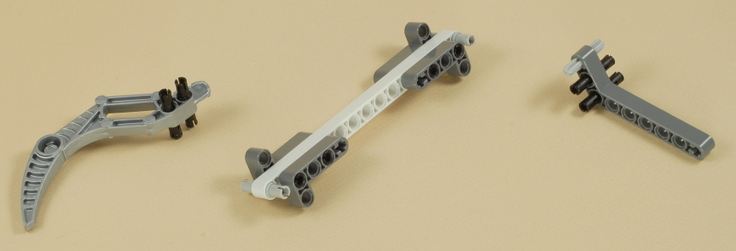
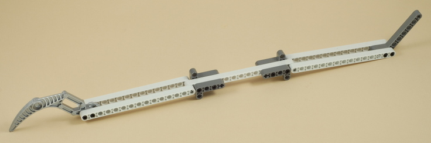
22
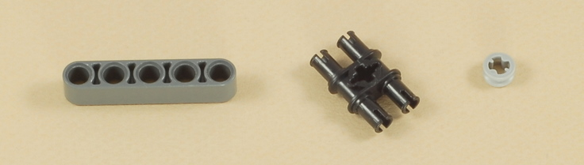
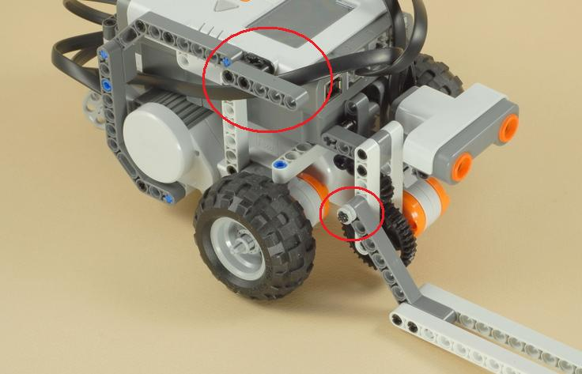
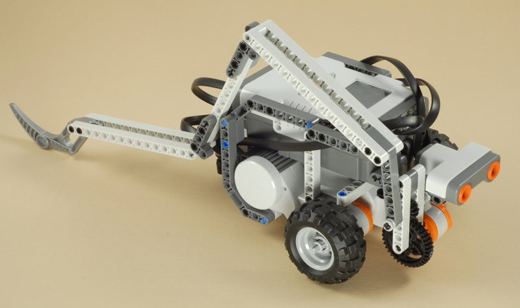
| Claw
Striker Programming The Claw_Strike program will make the Claw Striker try to automatically find a target and then strike it.
|
Challenges
|
|
Copyright
©
2007-2009 by Dave Parker. All rights reserved. |